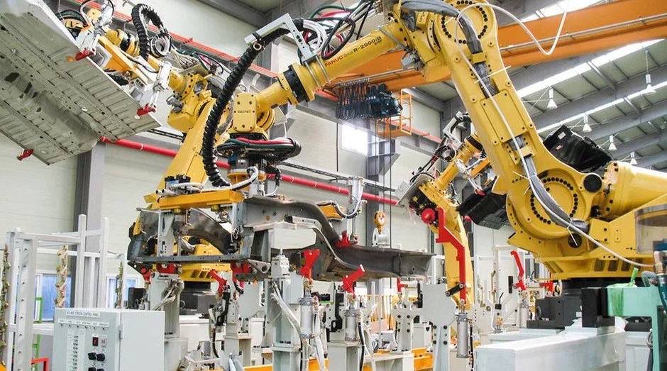
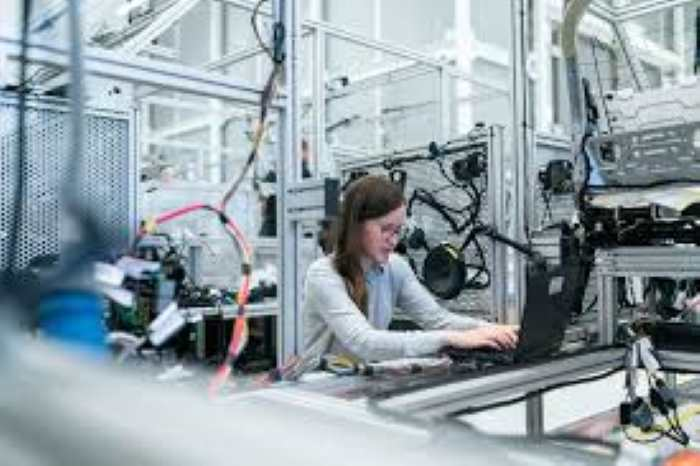
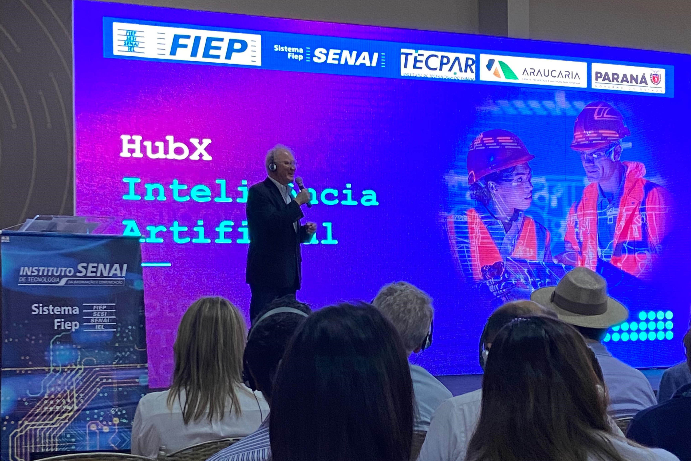
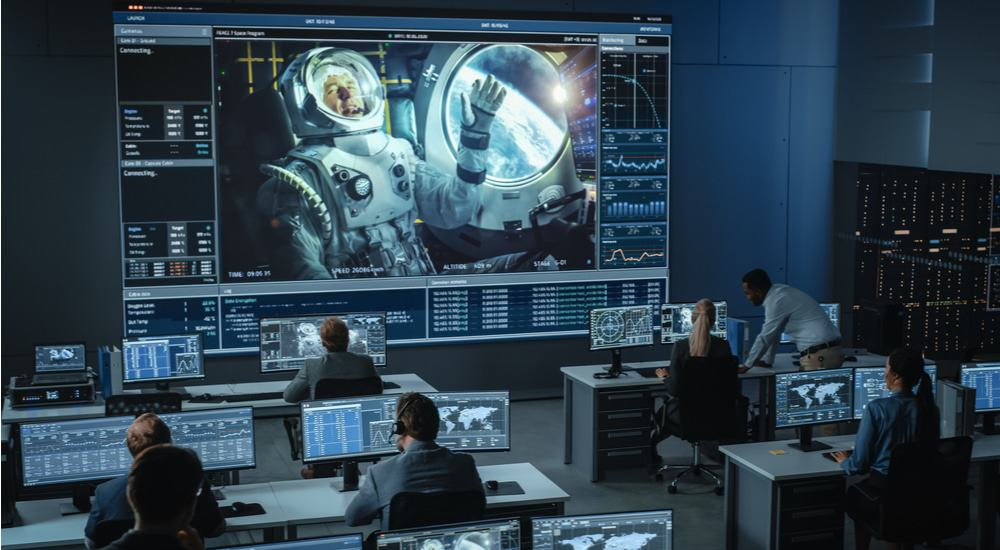

Projetos em Andamento
| Projeto |
Iniciação |
Planejamento |
Execução |
Monitoramento e Controle |
Encerramento |
| VerginY2K |
Léo Magalhães |
Derik Martins |
Bernardo Henrique |
Ruan Pablo |
Fernando Lopes |
| IdealGirl |
Julio Cesar |
Elenilda Souza |
Edleine Henrica |
Iza Costa |
Raul Piris |
| ValNet |
Kevin D Bocais |
TimLambo Mahathan |
Walesca Diniz |
Pedro Henrique |
Heloa Cristal |
| PACkart |
Edward Miguel |
Vanessa Camargo |
Beri Fritz |
Hwlinton |
Bryan Arthur |
| MineCrar |
João Victor |
Thiaga Eduarda |
Giovanna Marques |
Luiz Otavio |
Igor Guimarães |
VerginY2K
- Leo Magalhães: Responsável pela fase de Iniciação.
- Derik Martins: Responsável pela fase de Planejamento.
- Bernardo Henrique: Responsável pela fase de Execução.
- Ruan Pablo: Responsável pela fase de Monitoramento e Controle.
- Fernando Lopes: Responsável pela fase de Encerramento.
IdealGirl
- Julio César: Responsável pela fase de Iniciação.
- Elenilda Souza: Responsável pela fase de Planejamento.
- Edleine Henrica: Responsável pela fase de Execução.
- Iza Costa: Responsável pela fase de Monitoramento e Controle.
- Raul Piris: Responsável pela fase de Encerramento.

ValNet
- Kevin D Bocais: Responsável pela fase de Iniciação.
- TimLambo Mahathan Responsável pela fase de Planejamento.
- Walesca Diniz: Responsável pela fase de Execução.
- Pedro Henrique: Responsável pela fase de Monitoramento e Controle.
- Heloa Cristal: Responsável pela fase de Encerramento.

PACkart
- Edward Miguel: Responsável pela fase de Iniciação.
- Vanessa Camargo: Responsável pela fase de Planejamento.
- Beri Fritz: Responsável pela fase de Execução.
- Hwlinton: Responsável pela fase de Monitoramento e Controle.
- Bryan Arthur: Responsável pela fase de Encerramento.

MineCrar
- Joõa Victor:Responsável pela fase de Iniciação.
- Thiaga Eduarda:Responsável pela fase de Planejamento.
- Giovanna Marques:Responsável pela fase de Execução.
- Luiz Otavio:Responsável pela fase de Monitoramento e Controle.
- Igor Guimarães:Responsável pela fase de Encerramento.
